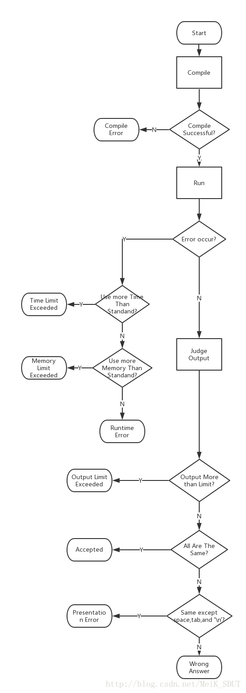

总会有人在群里问：“这个程序在我本地是正确的，但是提交到 OJ 上错误了”或者“本地 AC 但是提交 WA”。今天我来给大家讲解一下 OJ 的评测原理，以及对一些出现频率较高的问题进行解答。
建议在看本文之前先看一下这篇经典的文章：《提问的智慧》。
OnlineJudge 的评测原理
OJ 评测一个用户代码大概分为以下几步：
- 编译代码
- 重定向输入输出，运行用户程序
- 对比用户程序输出和标准答案
资源限制
如果用户不小心提交了死循环的话，我们肯定不能一直等着它结束，因此要使用某种方式来限制用户程序占用的资源。
需要限制的主要是：占用时间、占用内存、输出文件大小等。
权限限制
在服务器上运行用户提交的代码是很危险的，如果用户提交的一个 system('rm -rf /') 被执行了，那就瞬间爆炸了。或者通过 #include 来引用一些密码文件，然后在编译信息中有服务器密码等信息，也会导致相当危险的情况。
因此对用户提交的程序的运行权限要做严格的控制，常用的手段有创建专门用于评测的用户、使用 Docker 进行限制、限制 syscall 等。
输入输出
有些 OJ 要求用户手动打开文件读取，并将输出写入文件。但大部分 OJ （包括 SDUTOJ）的做法都是通过重定向输入输出流，来让程序可以从 stdin 读、输出到 stdout，这样用户就不需要使用文件读写等操作了。
对比答案
这里就要祭出我当年画的 OJ 评测流程图了。
（虽然有 csdn 的水印，但是是我自己画的图）
完整实现
这里是一个 OJ 评测姬核心的完整实现，关键注释齐全，可以用作参考。
常见问题解答
首先，所有的问题其实都是：

用户是不可能出问题的，所有的问题都是 OJ 的问题。下面的问题解答针对的是某个不知名的平行世界，在那个世界里：

为什么我本地 AC，提交却 WA 了
首先要明确，没有本地 AC 这种操作。如果你本地就能 AC，那么何必将代码提交到 OJ 上呢。
如果你说的是你的代码在你本地通过了测试数据的考验，但是提交到 OJ 却出错了：这是非常正常的。OJ 上给定的测试数据仅仅是其中一组数据，实际评测时会参照的可并不只有这一组数据。
当你发现本地通过测试而提交 WA 时，你应该做的是检查你的代码在不同的边缘数据时的表现，而不是去群里抱怨你“本地 AC”。
当然，有时候确实是题目或者数据出了问题，不过这个时候 OJ 和评测姬也是不背锅的。请找到对应题目的出题人，然后狠狠地把错误拍他脸上。
为什么我本地 AC，提交却 CE 了
OJ 评测姬的系统环境是 Linux，因此如果你使用了某些平台专属的操作（比如 #include <Windows.h>）的话就会 GG。
当然， 80% 的可能是你的代码写的有问题，你本地能运行只是你的编译器帮你做了一点优化。
这里列举一些常见的错误：
1 | void main() {} // 错误！main 的返回值必须为 int |
为什么我的提交 SE 了
SE（System Error）顾名思义是系统错误，这个错误一般和你的代码没啥关系。但是如果你发现你的某个代码只要提交就稳定 SE 的话，那么你最好检查一下你的代码里有没有非法字符。
为什么我本地 WA，提交却 AC 了
如果你的代码中有 UB（undefined behavior，未定义行为）的话，那么你提交的程序可能返回任意结果。
常见的 UB：变量未初始化、访问越界数组、func(a++, b++, a--) 、除零、函数未写返回值等操作。
道理我都懂但是我要怎么减少这些错误
一句话：不要 xjb 乱写，加上看看课本，就能在绝大部分情况下避免这些神奇错误。
我在初学阶段，总是先看一遍书再敲代码，在运行之前就已经知道其运行过程与结果了。这并不是多么难的东西，你要知道，大部分情况下，你翻一下课本，能比去群里跪求大佬收获更多。
另外，如果你使用和 OJ 相近的环境，可以在一定程度上减少这些错误。关于如何配置环境，可以看我写的《
C/C++ 代码风格指导》，里面有配置环境的方法与一些敲代码的指导。